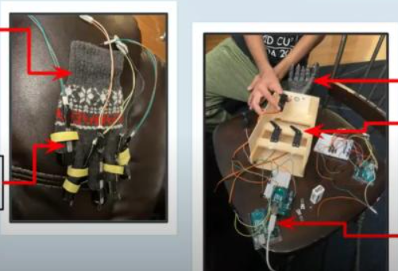

Bluetooth Robotic Hand
A Bluetooth-controlled assistive robotic hand prototype using Arduino, servo actuation, and flex-sensor input to translate control signals into finger movement.
Robotics / Accessibility
Overview
This build explores assistive robotics by combining embedded control, Bluetooth communication, and mechanical finger actuation in a compact hand prototype.
Technical Focus
The system centers on Arduino control logic, servo response, flex-sensor readings, and Bluetooth-driven commands for reliable motion control.
Build Notes
- Arduino-based control logic
- Servo-driven finger movement
- Flex sensor input for motion control
- Accessibility-focused design goal
Repository
The original Arduino code was lost after our high-school account access was removed, but the GitHub repository includes the video link detailing the project and build.